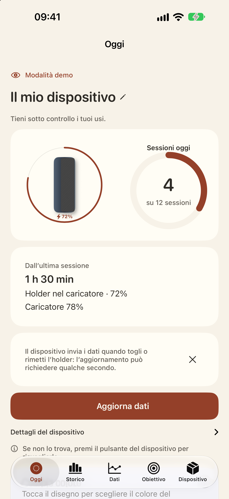
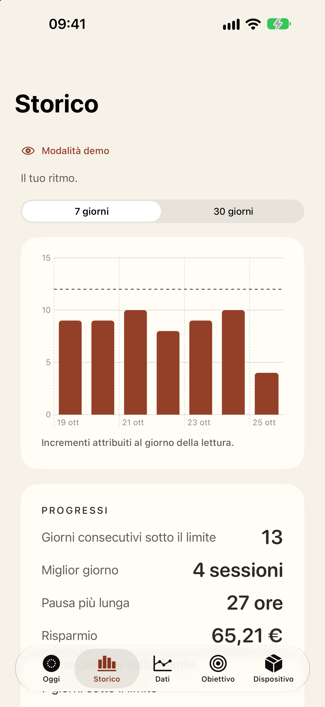
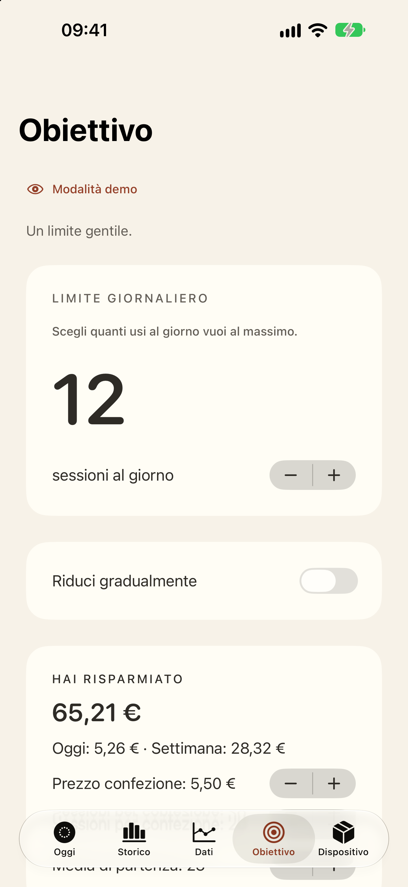
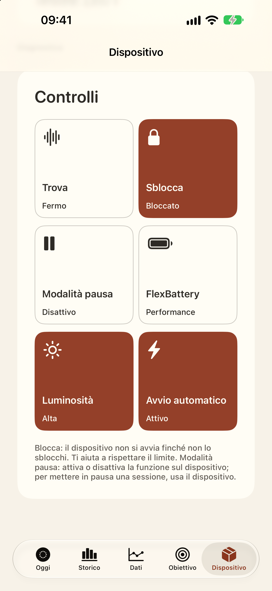
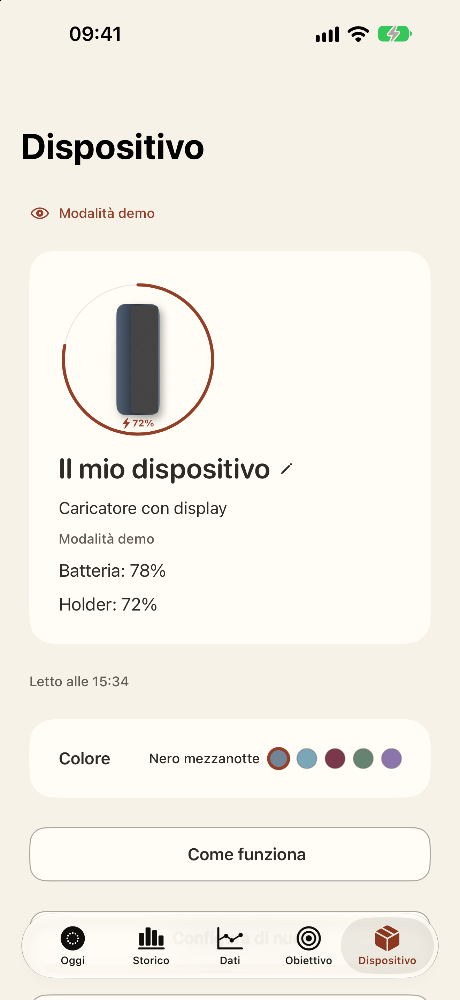
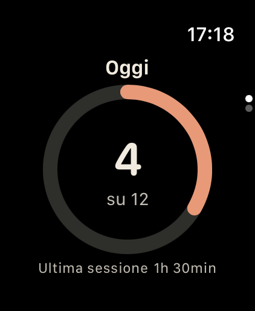

Automatic counting and time since the last session

Taper
Taper automatically counts how often you use your device and helps you avoid overdoing it.






No account. Your data stays on your iPhone and in your iCloud.
Read the privacy policy